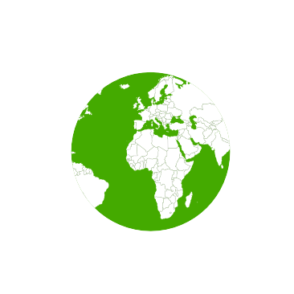

¿Qué necesito saber sobre el ambiente?
Biodiversidad
Es la variedad biológica de una determinada zona del planeta. Gran parte de los alimentos, medicamentos y productos que consumimos existen gracias a la gran variedad de seres vivos que habitan el planeta. Es por esto que la pérdida de biodiversidad daña la economía mucho más de lo que se piensa. Cuidarla debería ser prioridad.
Cambio Climático
Si bien es inevitable, los científicos advierten que todavía estamos a tiempo de que las consecuencias sean lo menores posibles. Para ello hay que atender algunos aspectos: reducir las emisiones de gases de efecto invernadero (GEI), en gran parte producto del uso de combustibles fósiles (como el petróleo, el gas y el carbón).
Desarrollo Sostenible
No debemos malgastar los recursos naturales limitados, de manera que las próximas generaciones puedan también hacer uso de ellas. Para lograrlo, la sociedad y los consumidores deben asumir algunos cambios fundamentales como la distribución igualitaria y el consumo responsable de los recursos naturales.
Economía Circular
Todo se aprovecha en un ciclo. La basura y los residuos pueden aprovecharse. Esta idea pretende superar el actual sistema de producción que consiste en el "usar y tirar". Así, la basura, la contaminación y el agotamiento de los recursos naturales se reduce y el ambiente lo agradece.
Eficiencia Energética
Esto nos permite consumir menos energía para producir lo mismo que hace unas décadas, contaminar menos y ahorrar más dinero. Gracias a la utilización eficiente de la energía, se requiere menor cantidad de recursos y de dinero, se mantiene o incluso se mejora la calidad de vida, se prolonga la vida de los recursos utilizados y se disminuyen los conflictos sociales.
Huella Ecológica
Mide la superficie necesaria (biocapacidad) para producir los recursos consumidos por un ciudadano y para absorber los residuos que genera. Con este concepto se pretende dejar en evidencia la sobreexplotación de los recursos naturales de la Tierra y el peligro que eso supone.
RRR
Las tres R se refieren a los conceptos de Reducir, Reutilizar y Reciclar. Es importante reducir el uso de los recursos, reutilizar los productos para darles una vida útil más larga y, una vez que el producto no se pueda emplear más, reciclarlo de forma adecuada.
Fuente: Consumer.es